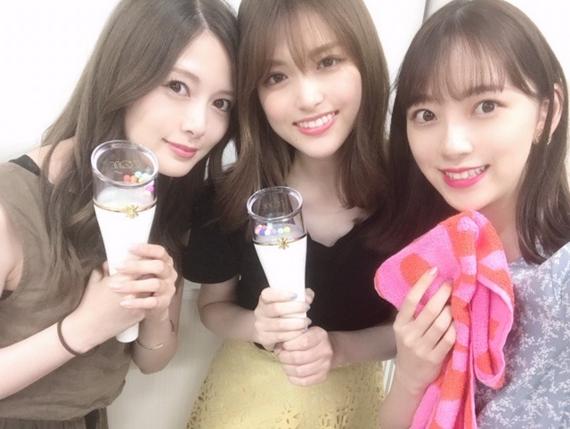
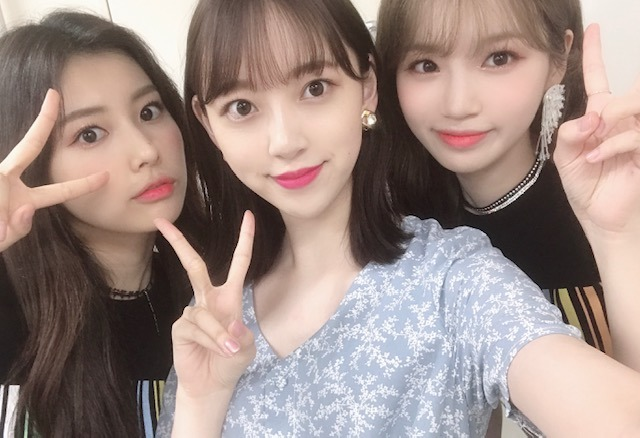

2019/0823Friお腹がすいてどうにかなりそう
やっほ~
いま目の前で日奈子とみり愛が歌を歌ってくれてます。笑
ほんとメンバーといると楽しくて毎日笑顔が絶えません☺︎
ここ数日、声がずっとハスキー状態で
エアコンかアレルギーかで喉をやられたみたいでとにかく腫れて熱が出ないように喉スプレーをマメにシュッシュしてます
痛みは引いたけどやっぱり声が少し低くて枯れてる。笑


わーい♡
白石さんと松村さんとマネージャーさんとIZ*ONEさんのライブを観に行ってきました！
松村さんとはファンミに続き♡
白石さんとはお初♡
横並びの席でみんなでワイワイ観ました
衣装も全部可愛くて、かわいい歌もかっこいい歌もパフォーマンスが凄くて終始引き込まれました
air planeが特に好きなので聴けて良かったです！
やっぱり客席で見るいろんな方のライブはとても勉強になるなぁ...
ステージに立っているだけじゃ気づけないことが沢山ありました、、ライブに生かさなきゃ☺︎
カンちゃんがライブ来てねって言ってくれていたので、今回行けたのでよかったです
MCで突然、「今日は...未央奈ちゃん！... など友達も観に来てくれています」とカンちゃんから私の名前が出て、あまりにも突然でびっくりして、嬉し恥ずかしくて松村さんの肩にもたれてしまいました。笑
嬉しいな♡
私も早くライブがしたくなりました！
踊りたい〜〜〜
改めて、歌って踊ることが本当に好きなんだなぁと。
神宮3日間、頑張りますね！！


カンちゃんとチェウォンちゃん♡
天使が二人~
カンちゃんがいつもチェウォンちゃんを呼んでくれます、、(,,•﹏•,,)照 恥ずかしくてまだちゃんとお話しできない、、

ユジンちゃんとも久しぶりでした！
あー！！って、来てくれて嬉しかったなぁ☺︎
また遊びたいな(^-^)
神宮ライブ、もうすぐかぁ~
夏終わるの早いですね
そういえばプライベートで夏らしいことしてないな
色つきそうめんをスーパーでお母さんと見つけて懐かしくて買ってみたくらい。笑
だから神宮でたくさん汗かいて皆さんと夏の思い出作るんだ(^.^)
ちなみに私のサイリウムカラーはオレンジx白です！
タオルやサイリウムやうちわよく見えるのでたくさん見つけてアイコンタクト取れたらいいな
目と目、合わせましょうね~
暑いので水分補給はマメに(`0`)！
気をつけて来てください
ではは
2019/08/23 17:30
コメント(297)
みおな☆
更新ありがと！
神宮ライブ、ホントに楽しみー！！
自分も神宮で最高の思い出作るんだ！(^.^)
明日の握手会行けないけど、ファンのみなさんにみおなの笑顔を届けてください♬
更新ありがと！
神宮ライブ、ホントに楽しみー！！
自分も神宮で最高の思い出作るんだ！(^.^)
明日の握手会行けないけど、ファンのみなさんにみおなの笑顔を届けてください♬
更新待ってました！！
神宮行くよ〜
未央奈ちゃんの喉が早く治りますように。
まいやんとまちゅと一緒にライブ行ったんだね！
いいな〜私も未央奈ちゃんとライブ行きたい
絶対楽しい
最近未央奈ちゃんが大好き過ぎて
未央奈ちゃんが出演する番組を全て
録画した！あとね、乃木坂文庫の
レジまでの推理
買ったよ！カップスターも
蓋開けたら未央奈ちゃんのメッセージだった！
引きが強いのかな？
次の更新も待ってます。
神宮行くよ〜
未央奈ちゃんの喉が早く治りますように。
まいやんとまちゅと一緒にライブ行ったんだね！
いいな〜私も未央奈ちゃんとライブ行きたい
絶対楽しい
最近未央奈ちゃんが大好き過ぎて
未央奈ちゃんが出演する番組を全て
録画した！あとね、乃木坂文庫の
レジまでの推理
買ったよ！カップスターも
蓋開けたら未央奈ちゃんのメッセージだった！
引きが強いのかな？
次の更新も待ってます。
堀ちゃんはもちろんのこと、堀ちゃんの周りにもたくさんの天使が...(〃▽〃) IZ*ONE←すでに大人気だけど、これからますます人気出るだろうなぁ♪♪ 喉のケア含め、体調のためにもなるべくゆっくり体休めてあげてねぇ(*´-`)ﾉ
こんにちは‼︎
ブログ更新、ありがとうございます♪
なんと、美しい3人の3ショット…‼︎
こんな美人さんたちに応援されたら、誰だって張り切ってしまいそうですね♪
グループ内でも仲良しで、グループ外にも仲良しな人がいて。
理想的なコミュニティを築いてますね‼︎
それにしても、喉は大丈夫ですか？
急に暑くなったり、涼しくなったり、体調を崩しそうな気候が続いているので、くれぐれも気をつけて。
ではでは、また。
明日も未央奈にとっていい1日になりますように♪
ブログ更新、ありがとうございます♪
なんと、美しい3人の3ショット…‼︎
こんな美人さんたちに応援されたら、誰だって張り切ってしまいそうですね♪
グループ内でも仲良しで、グループ外にも仲良しな人がいて。
理想的なコミュニティを築いてますね‼︎
それにしても、喉は大丈夫ですか？
急に暑くなったり、涼しくなったり、体調を崩しそうな気候が続いているので、くれぐれも気をつけて。
ではでは、また。
明日も未央奈にとっていい1日になりますように♪
未央奈～ こんにちは
乃木坂８周年、そのころは松井玲奈さんと出会った頃かな？
それにしてもたくさんの交流の幅、さすがですね。
ライブがしたくてたまらない様子が伝わっさてきますが、いよいよ神宮が近づいてきましたね。
心配なのは天気ですが、このところの天気を見ていると、とても心配ですね。台風で流れた大阪の分も含め、取り返したい気持ちもよ～く分かります。玲香たんの卒業公演でもあり、せめて最終日だけでも雨よ、降らないで‥‥。存分にできることお祈りしております。
おっと、その前に明日は幕張でのは全握・ミニライブですね。まずはこちらで、すばらしいパフォーマンスお願いしますね。たくさんの方に元気と笑顔をお届けください。
乃木坂８周年、そのころは松井玲奈さんと出会った頃かな？
それにしてもたくさんの交流の幅、さすがですね。
ライブがしたくてたまらない様子が伝わっさてきますが、いよいよ神宮が近づいてきましたね。
心配なのは天気ですが、このところの天気を見ていると、とても心配ですね。台風で流れた大阪の分も含め、取り返したい気持ちもよ～く分かります。玲香たんの卒業公演でもあり、せめて最終日だけでも雨よ、降らないで‥‥。存分にできることお祈りしております。
おっと、その前に明日は幕張でのは全握・ミニライブですね。まずはこちらで、すばらしいパフォーマンスお願いしますね。たくさんの方に元気と笑顔をお届けください。
更新ありがとう☺
IZ*ONEのライブ行ったんやね♪
さゆまいとの写真も嬉しい(;;)
みんな可愛くて眩しいです～
神宮でのライブも楽しんでね
IZ*ONEのライブ行ったんやね♪
さゆまいとの写真も嬉しい(;;)
みんな可愛くて眩しいです～
神宮でのライブも楽しんでね
楽しそうで何よりです！
私もライブ行きたいなー
どの写真も笑顔で素敵です！
明日は全国握手会、来週は神宮ライブですね！喉、気をつけて頑張ってください！！
では、、
goodluck
私もライブ行きたいなー
どの写真も笑顔で素敵です！
明日は全国握手会、来週は神宮ライブですね！喉、気をつけて頑張ってください！！
では、、
goodluck
ほい未央奈(･∀･∩)(今日は映画の感想と小話しだけでお許し下され。笑)
”ロケットマン”を観てきたよーボヘミアンとグレイテストを足して２でわったような感じの内容だったかなーエルトンジョンとバニーの曲と歌詞は素晴らしかったけど、ボヘミアンと内容が被り気味だったから盛り上がりには欠けたかな..タロンエガートンの身体を張った演技は、BL好き(こっちもおっさんずラブ。笑)にはたまらないシーンがあったから好きな方はぜひ。笑
パンパカパーン洋画(映画館、dvd)のみで、残り２作品を観れば、今年だけで50作品を観たことになるーやったー嬉しい＼(^o^)／といいつつ、読書は2冊ぐらいしか今年は読んでないし、美術館は今年に入って行ってないような。笑
おやすみおなー
”ロケットマン”を観てきたよーボヘミアンとグレイテストを足して２でわったような感じの内容だったかなーエルトンジョンとバニーの曲と歌詞は素晴らしかったけど、ボヘミアンと内容が被り気味だったから盛り上がりには欠けたかな..タロンエガートンの身体を張った演技は、BL好き(こっちもおっさんずラブ。笑)にはたまらないシーンがあったから好きな方はぜひ。笑
パンパカパーン洋画(映画館、dvd)のみで、残り２作品を観れば、今年だけで50作品を観たことになるーやったー嬉しい＼(^o^)／といいつつ、読書は2冊ぐらいしか今年は読んでないし、美術館は今年に入って行ってないような。笑
おやすみおなー
未央奈ちゃん、今日もお疲れ様です＞＜ゞ
こ～れまた、はしゃぎ娘２人が歌ってるってきたもんだ
はしゃぐのが大好きな人が２人もいるとなると、とても賑やかなんだろうな～
未央奈ちゃん、沙友理ちゃん、麻衣ちゃんの３ショット！
未央奈ちゃんは勿論、多忙な２人と過ごす時間は豪華なひと時ですな～
２人が持っている物は何だろう？
夏が終わりに近づいていると同時に乃木坂の夏もいよいよ佳境
ライブ観戦で学んだ事を乃木坂のライブに還元できるよう頑張ってねー＞＜ノシ
こ～れまた、はしゃぎ娘２人が歌ってるってきたもんだ
はしゃぐのが大好きな人が２人もいるとなると、とても賑やかなんだろうな～
未央奈ちゃん、沙友理ちゃん、麻衣ちゃんの３ショット！
未央奈ちゃんは勿論、多忙な２人と過ごす時間は豪華なひと時ですな～
２人が持っている物は何だろう？
夏が終わりに近づいていると同時に乃木坂の夏もいよいよ佳境
ライブ観戦で学んだ事を乃木坂のライブに還元できるよう頑張ってねー＞＜ノシ
ブログ更新ありがとう！
神宮ライブ行けないけど自分の部屋でサイリウムとタオル振って応援してます(笑)
頑張ってください！！
未央奈ちゃん、ブログ更新ありがとう✨
まいやん、まちゅとIZONEのコンサート行ったんだね〜。
めっちゃ楽しそう IZONEのメンバーとも仲が良いのは嬉しい。
神宮ライブは、最終日がライブ中継で見られたら良いな…。
暑いから体調には気をつけてね。
まいやん、まちゅとIZONEのコンサート行ったんだね〜。
めっちゃ楽しそう IZONEのメンバーとも仲が良いのは嬉しい。
神宮ライブは、最終日がライブ中継で見られたら良いな…。
暑いから体調には気をつけてね。
更新本当にありがとう(*^-^*)未央奈が1番天使(*･∀･*)明日白とオレンジのカラーにして応援してる(*ゝω･*)未央奈のレーン並ぶね☆初めてだけど宜しくお願いします(* >ω<)ホント大好き☆〃
すき！
ライブ楽しみです☺︎
この3人はやばい！
未央奈さん友達が多いのは未央奈さんが優しいからだね。
韓国人のアーティストは知らないな。未央奈さん教えて下さい。
いつも忙しいのにまめにメールありがとう。ブログ更新ありがとう。
喉の調子はどうですか早く元気になれるかな。
あと少しで暑い夏は終わりです。仲良しになれるかな、大好きです可愛いです。
まいやんとまっつんと出掛けて楽しそう。
女優未央奈さん期待しているので頑張って。いつか握手会で会いたいね。
韓国人のアーティストは知らないな。未央奈さん教えて下さい。
いつも忙しいのにまめにメールありがとう。ブログ更新ありがとう。
喉の調子はどうですか早く元気になれるかな。
あと少しで暑い夏は終わりです。仲良しになれるかな、大好きです可愛いです。
まいやんとまっつんと出掛けて楽しそう。
女優未央奈さん期待しているので頑張って。いつか握手会で会いたいね。
堀さん、こんばんは。ブログ更新してくれて嬉しいです。
ライブ行って刺激になったんですね。そういやこの前のしゃべくり007でカンヘウォンさんが食べ物好きでメンバー内で一番食べるって言ってて、堀さんと意気投合するのも納得だと思いました。
ライブを楽しみつつ勉強もするとは流石です。神宮のライブに来るお客さん達も堀さんみたいに沢山楽しんで自分も頑張ろうと思ってくれたらいいですね。
喉ずっと良くないみたいですね。長引いてるのが弱ってる兆候だったりしたら困ります。ライブ前の大事な時期なので、血糖値を上げ過ぎず下げ過ぎず、沢山笑顔にもなって、休息も取りつつ頑張ってください。
ライブ行って刺激になったんですね。そういやこの前のしゃべくり007でカンヘウォンさんが食べ物好きでメンバー内で一番食べるって言ってて、堀さんと意気投合するのも納得だと思いました。
ライブを楽しみつつ勉強もするとは流石です。神宮のライブに来るお客さん達も堀さんみたいに沢山楽しんで自分も頑張ろうと思ってくれたらいいですね。
喉ずっと良くないみたいですね。長引いてるのが弱ってる兆候だったりしたら困ります。ライブ前の大事な時期なので、血糖値を上げ過ぎず下げ過ぎず、沢山笑顔にもなって、休息も取りつつ頑張ってください。
ブログ更新ありがとう！
IZ*ONEのライブ行ったんだね〜！
先輩たちと行けて楽しそう☺︎
みおちゃん韓国のお友達たくさんできててすごい！！
神宮ライブ初日行くよ！
みおちゃんカラーのサイリウム振る〜！
目合わせたいけど、席上の方だから厳しいかな。。
でもみおちゃん絶対見つけるからね❤︎
楽しみにしてるね！！
IZ*ONEのライブ行ったんだね〜！
先輩たちと行けて楽しそう☺︎
みおちゃん韓国のお友達たくさんできててすごい！！
神宮ライブ初日行くよ！
みおちゃんカラーのサイリウム振る〜！
目合わせたいけど、席上の方だから厳しいかな。。
でもみおちゃん絶対見つけるからね❤︎
楽しみにしてるね！！
未央奈～☆☆
ライブに行くと、俺なんかは単純に
ひたすら楽しんで終わっちゃうけど
未央奈は楽しんだ上に、勉強になったって思えるところが
やっぱりアイドル意識が高いよなー
未央奈、さすがだ～
それにしても、ライブでステージ上から
自分の名前を呼ばれることってまずないからね、
それはびっくりするよね。笑
その時の肩にもたれた未央奈の様子が目に浮かぶ～
喉は大事にしてね。
未央奈の喉がよくなりますように。
ライブに行くと、俺なんかは単純に
ひたすら楽しんで終わっちゃうけど
未央奈は楽しんだ上に、勉強になったって思えるところが
やっぱりアイドル意識が高いよなー
未央奈、さすがだ～
それにしても、ライブでステージ上から
自分の名前を呼ばれることってまずないからね、
それはびっくりするよね。笑
その時の肩にもたれた未央奈の様子が目に浮かぶ～
喉は大事にしてね。
未央奈の喉がよくなりますように。
未央奈ブログ更新ありがとー！プティちゃん元気ですか？未央奈もアレルギー気を付けてねー‼️
堀さん、おはようございます。
乃木坂46メンバーが楽屋でわちゃわちゃ楽しそうにしているのが大好き。これからもずっと仲よしでいてください。
白石さんと松村さん。お姉さま方と一緒にライブ観戦、いいですねえ。そしてひたすらうらやましい（笑）。白石さん、お誕生日おめでとうございます。そして間もなく松村さんも、お誕生日おめでとうございます。
もうすぐ夏の締めくくりを飾る神宮野球場でのライブ。のどのケアしっかりすませて、元気にステージに臨めますよう願っています。
ではまたコメントします。どうぞすてきな週末を。
さらばだ、また会おう！（気球に乗って去りぬ〜）
乃木坂46メンバーが楽屋でわちゃわちゃ楽しそうにしているのが大好き。これからもずっと仲よしでいてください。
白石さんと松村さん。お姉さま方と一緒にライブ観戦、いいですねえ。そしてひたすらうらやましい（笑）。白石さん、お誕生日おめでとうございます。そして間もなく松村さんも、お誕生日おめでとうございます。
もうすぐ夏の締めくくりを飾る神宮野球場でのライブ。のどのケアしっかりすませて、元気にステージに臨めますよう願っています。
ではまたコメントします。どうぞすてきな週末を。
さらばだ、また会おう！（気球に乗って去りぬ〜）
やっほ-
天使の三人(o可愛o)
IZ*ONEのライブワイワイ＼(^^)／
神宮ライブで未央奈にアイコンタクト取られたら
みお造、失神します(゜-゜)
喉まだカスカスなんですか？
エアコンが原因なら業者に洗浄依頼したほうが
良いなと、、
では
神宮初日にいくよぉ。これでこの夏4回目の参加だよ。二本づつのサイリウムでいくよ。未央奈のレスもらえたら最高だよ。
堀ちゃん、大好きだよー
かわいい
今日の握手会行きたかった！
学校！
今日の握手会行きたかった！
学校！
おはよう♪
今日は握手会ですね。
楽しんでくださいね(*^^*)
それと、体調には気を付けてね。
今日は握手会ですね。
楽しんでくださいね(*^^*)
それと、体調には気を付けてね。
未央奈ちゃん更新ありがとー！
きいちゃんとみり愛ちゃんが
目の前で歌ってるってどういう状況？笑
3人が笑顔でいるところ
いつか遠目からでもいいので見てみたいものです。
ライブいいなー！
自分も乃木坂のライブもっと観に行きたい！
神宮のライブ楽しみだね！
めっちゃ応援します！(^o^)
ではではー。
きいちゃんとみり愛ちゃんが
目の前で歌ってるってどういう状況？笑
3人が笑顔でいるところ
いつか遠目からでもいいので見てみたいものです。
ライブいいなー！
自分も乃木坂のライブもっと観に行きたい！
神宮のライブ楽しみだね！
めっちゃ応援します！(^o^)
ではではー。
おはようございます!未央奈ちゃんブログ更新ありがとうございます!
IZ*ONEのライブは楽しかったでしょうか？
未だ暑い日が多いですけれども、如何お過ごしでしょうか？
時が過ぎるのは早いもので、もうすぐ夏が終わろうとしています!
俺も、あと1ヶ月余りで28ですし、人生はあっと言う間に過ぎる物ですね!
今日の握手会は玲香ちゃんが最後ですね!
どうか玲香ちゃんに最高の花道を飾って上げて下さい!
今日の握手会楽しんで下さい!
忙しいのにブログまめに更新していて、みおなちゃんは本当にアイドルの鑑です。
いつもありがとう。
無理しないで
応援してます
いつもありがとう。
無理しないで
応援してます
ライブ頑張ってください！応援してます！！
喉、心配です。
早くよくなるといいね。
歌って踊る未央奈さん大好きです。
早くよくなるといいね。
歌って踊る未央奈さん大好きです。
IZ*ONEいいよね！んかる〜
チェウォン良いよねー わかる。
今日ちょうど全握で十八歳の誕生日を迎えるから未央奈のレーン行くから記念に祝って欲しい〜です‼️
握手会楽しみにしてるね。
握手会楽しみにしてるね。
未央ちゃんやほ～
なんかレアな美人３人
喉大丈夫ですかねぇ？ あまり長引くようなら病院に行った方がいいかとおもわれ
神宮もあるし お大事にね
僕もお腹がすいて、背中と引っ付きそうなのでこれから食べます
なんかレアな美人３人
喉大丈夫ですかねぇ？ あまり長引くようなら病院に行った方がいいかとおもわれ
神宮もあるし お大事にね
僕もお腹がすいて、背中と引っ付きそうなのでこれから食べます
可愛すぎて涙が……笑
お大事にしてください!!
大好きです♡♡
お大事にしてください!!
大好きです♡♡
IZ*ONEかっこかわいいよねぇ！
わたすも好きです
わたすも好きです
未央奈、おはようございます。
超レアな写真
未央奈、まいやーん、まっちゅん、最高です。
リラックスして楽しんでいる乃木坂ちゃんを見るのが本当に大好きです。ありがとう
超レアな写真
未央奈、まいやーん、まっちゅん、最高です。
リラックスして楽しんでいる乃木坂ちゃんを見るのが本当に大好きです。ありがとう
未央奈～～～。神宮まで日がないよ。あまり、無理しないでのど飴なめて早く治そう。写真、どの子も可愛い。さすが芸能人。まいやんとライブかぁ。いいなあ。。
ひどく、暑く、汗だらだらの夏だったけど、終ると思うと、ちと、寂しい気も？秋も終わって、又、おいらの嫌いな冬がやって来る。そんで、又、年越して。早いなぁ。
まあ、何はともあれ、神宮ですね。初未央奈、目に焼き付けます。
じゃ。
ひどく、暑く、汗だらだらの夏だったけど、終ると思うと、ちと、寂しい気も？秋も終わって、又、おいらの嫌いな冬がやって来る。そんで、又、年越して。早いなぁ。
まあ、何はともあれ、神宮ですね。初未央奈、目に焼き付けます。
じゃ。
喉大丈夫？
アレルギーだったらアレルギー薬飲んだらましになると思うよ。最近のはあんま眠くならないし。
家でエアコンつけてたら、悪くなるとかならエアコンのカビとかも可能性あるから業者に清掃してもらったほうがいいかも。
体に気を付けてがんばってねー。
アレルギーだったらアレルギー薬飲んだらましになると思うよ。最近のはあんま眠くならないし。
家でエアコンつけてたら、悪くなるとかならエアコンのカビとかも可能性あるから業者に清掃してもらったほうがいいかも。
体に気を付けてがんばってねー。
ブログ更新、ありがとー
いろんなアーティストやメンバーとの交流、
イイネ！！
神宮、スタンド席からのサイリウム、
君に届け！！
いろんなアーティストやメンバーとの交流、
イイネ！！
神宮、スタンド席からのサイリウム、
君に届け！！
いやー、いいね、そうやって仲良く出来るのは未央奈の強みだと思う
可愛いなー…今回も！
あ、でも無理せんでな！
By翔んで9メートル
可愛いなー…今回も！
あ、でも無理せんでな！
By翔んで9メートル
まいやんと松ちゅんとマネージャーさんとで
ライブ満喫した堀未央奈さん
ブログ更新ありがとう⁉︎(^ ^)
今回のブログは可愛いアイドル
勢揃いブログですね〜〜⁉︎
癒される〜〜
ライブ満喫した堀未央奈さん
ブログ更新ありがとう⁉︎(^ ^)
今回のブログは可愛いアイドル
勢揃いブログですね〜〜⁉︎
癒される〜〜
人は俺を全握マイスターと呼ぶ
ブログ更新ありがとうございます！
更新多くて嬉しいです
アイコンタクトとれるように頑張ります！
あ、神宮全落ちだから会場行けないんだ笑
まあ、そういう運命だと思って受け止めます笑笑
応援してます
更新多くて嬉しいです
アイコンタクトとれるように頑張ります！
あ、神宮全落ちだから会場行けないんだ笑
まあ、そういう運命だと思って受け止めます笑笑
応援してます
こんにちは。
ライブ楽しかったみたいで良かったですね。
ライブに行かれた事で神宮への意欲も沸かれたみたいでなによりです。喉は神宮の当日までによくなるといいですね
まだあと少し時間がありますので、喉をいたわられて、状態がよくなる事を願っています。
何でもない話ですが、昨日ミュージックステーションを見ていてサカナクションさんが、生ライブで歌っていたのですが、約300人のお客さんがみんなノリノリで、未央奈ちゃんがその中にいるような気がしました。自分の勝手な妄想です、すみません
今日は握手会お疲れ様です！
ライブ楽しかったみたいで良かったですね。
ライブに行かれた事で神宮への意欲も沸かれたみたいでなによりです。喉は神宮の当日までによくなるといいですね
まだあと少し時間がありますので、喉をいたわられて、状態がよくなる事を願っています。
何でもない話ですが、昨日ミュージックステーションを見ていてサカナクションさんが、生ライブで歌っていたのですが、約300人のお客さんがみんなノリノリで、未央奈ちゃんがその中にいるような気がしました。自分の勝手な妄想です、すみません
今日は握手会お疲れ様です！
堀ちゃん！
今日は全国握手会で初めて握手ができて、
うれしかったです！！
お大事に〜ヽ(´▽｀)/
神宮のライブで会いましょ〜♫
今日は全国握手会で初めて握手ができて、
うれしかったです！！
お大事に〜ヽ(´▽｀)/
神宮のライブで会いましょ〜♫
今日の握手会ありがとうございました
マスクで目だけしか見れなかったけど、堀ちゃんの目が好きなので綺麗でした
体調不良というのは気掛かりですが、
無理しないで下さいね
お大事に
マスクで目だけしか見れなかったけど、堀ちゃんの目が好きなので綺麗でした
体調不良というのは気掛かりですが、
無理しないで下さいね
お大事に
皆さんカワイイです( ｡ﾟДﾟ｡)って承認されてないのは悲しいなぁ( ´_ゝ`)暑い日もあるので気を付けて。


めっちゃ大好きです！
喉治れ〜